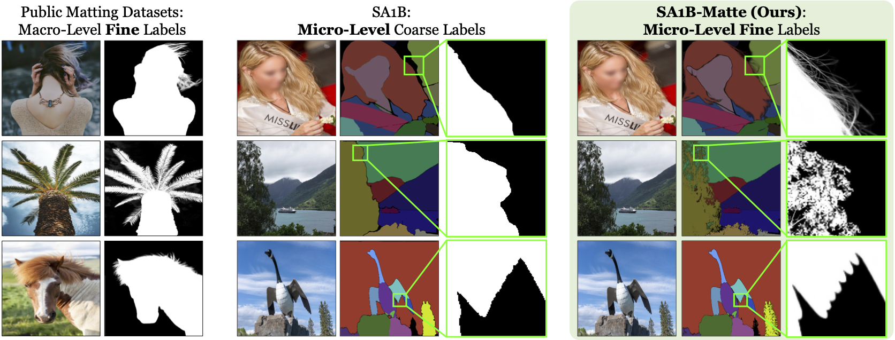
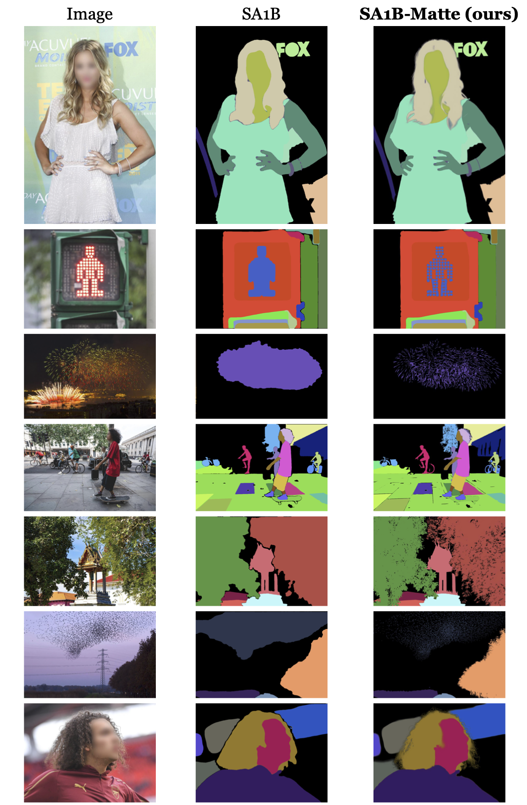
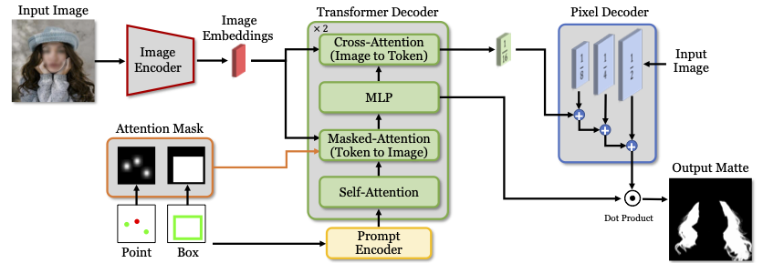
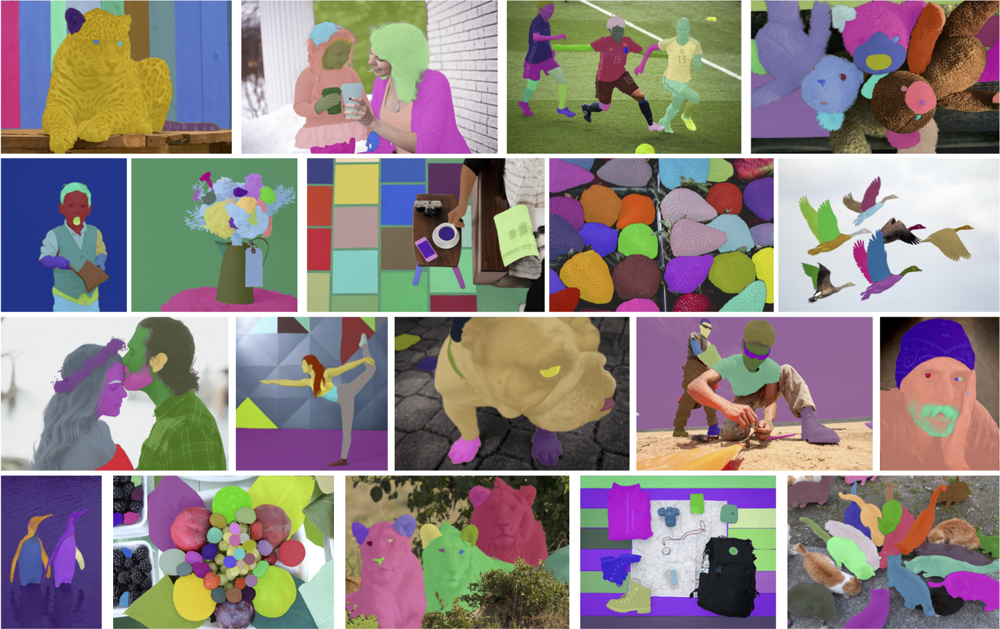

In this paper, we introduce a novel zero-shot image matting model. Recent models like SAM (Segment Anything Model) exhibit strong zero-shot capabilities, but they fall short in generating fine-grained, high-precision masks. To address this limitation, we propose two key contributions: First, we develop a label converter that transforms segmentation labels into detailed matte labels, creating the new SA1B-Matte dataset. This enables the model to generate high-quality, micro-level matte masks without costly manual annotations. Second, we design a zero-shot matting model equipped with a hierarchical pixel decoder and prompt-aware masked attention mechanism, improving both the resolution of mask outputs and the model’s ability to focus on specific regions based on user prompts. We evaluate our model using the newly introduced MicroMat-3K test set, which contains high-quality micro-level matte labels. Experimental results show that our model outperforms SAM and other existing methods in precision and zero-shot generalization. Furthermore, we demonstrate the versatility of our approach in downstream tasks, including image inpainting and 3D NeRF, where conditioning on precise masks is a preliminary for achieving optimal results. Our contributions provide a robust foundation for advancing zero-shot image matting and its downstream applications across a wide range of computer vision tasks.
For effective zero-shot matting, a dataset with micro-level matte labels is essential. However, manually annotating matte labels at the micro-level requires extensive human labor and cost. To this end, we present an innovative Label Converter that transforms any segment label into a matte label. The converter takes an image and segmentation label as input source and is trained to produce a corresponding matte label. This approach poses two key challenges: (1) Generalization to micro-level objects, and (2) Unnecessary fine-grained representation. To address these challenges, we introduce Spatial Generalization Augmentation (SGA) and Selective Transformation Learning (STL).

Refer to the paper for more details on SGA and STL.
After training the label converter, we transform segmentation labels in the SA1B dataset to matte labels using the converter, constructing the new SA1B-Matte dataset. The coarse labels in the SA1B dataset are successfully transformed into high-quality precise matte labels. Compared to existing public matting datasets consisting of macro-level fine labels, the SA1B-Matte dataset is a large-scale image matting dataset with micro-level fine labels, providing an ideal foundation for developing zero-shot matting models.
Qualitative samples from each dataset: Public matting datasets (left), SA1B dataset (center), and our proposed SA1B-Matte dataset (right).
Qualitative samples of the SA1B dataset with micro-level coarse labels and our SA1B-Matte dataset with micro-level fine labels.
Our proposed model, ZIM, builds upon the network architecture of SAM. As illustrated in the below figure, ZIM consists of four components: (1) Image Encoder, (2) Prompt Encoder, (3) Transformer Decoder, and (4) Pixel Decoder. While pixel decoder of SAM is insufficient for tasks requiring fine-grained feature representations and is prone to generate checkerboard artifacts, we introduce a hierarchical pixel decoder with a multi-level feature pyramid design. The image embedding is sequentially upsampled and concatenated with the corresponding feature maps at each resolution. The decoder is designed to be highly lightweight, adding only 10ms of computational overhead compared to SAM's pixel decoder. Moreover, we propose a Prompt-Aware Masked Attention mechanism inspired by Mask2Former, which allows the model to dynamically focus on the relevant regions within the image based on visual prompts, enabling more precise attention to the areas of interest.
Overview of the ZIM architecture. Based on the SAM network architecture, we introduce two key improvements: (1) Hierarchical Pixel Decoder and (2) Prompt-Aware Masked Attention.
We introduce a new test set, named MicroMat-3K, to evaluate zero-shot interactive image matting models. It consists of 3,000 high-resolution images paired with micro-level matte labels, providing a comprehensive benchmark for testing various matting models under different levels of detail. It includes two types of matte labels: (1) Fine-grained labels and (2) Coarse-grained labels. Moreover, it provides pre-defined point prompt sets for positive and negative points and box prompt sets for evaluating interactive scenarios.
Refer to the paper for more details on MicroMat-3K dataset.
Please refer to the paper for more detailed experimental settings and results.
Quantitative comparison of our ZIM model and six existing methods on the MicroMat-3K dataset.
Qualitative comparison of ours with five existing zero-shot models (SAM, HQ-SAM, Matte-Any, Matting-Any, and SMat).

(1) ADE20K, (2) BBBC038v1, (3) Cityscapes, (4) DOORS, (5) EgoHOS, (6) DRAM, (7) GTEA, (8) Hypersim, (9) IBD, (10) iShape, and (11) COCO datasets.

(12) NDD20, (13) NDISPark, (14) OVIS, (15) PIDRay, (16) Plittersdorf, (17) PPDLS, (18) STREETS, (19) TimberSeg, (20) TrashCan, (21) VISOR, (22) WoodScape, and (23) ZeroWaste-f datasets.
Qualitative results of three kinds of input masks (COCO ground-truth, SAM, and ZIM) along with their corresponding image inpainting results using the Inpainting Anything framework.
Qualitative samples of 3D object segmentation results guided by SAM and ZIM models with in SA3D framework for the LLFF-trex, LLFF-horns, and 360°-kitchen (Lego) datasets.
Qualitative samples of SAM and ZIM output masks on the medical image datasets using the box prompt.
@article{kim2024zim,
title={ZIM: Zero-Shot Image Matting for Anything},
author={Kim, Beomyoung and Shin, Chanyong and Jeong, Joonhyun and Jung, Hyungsik and Lee, Se-Yun and Chun, Sewhan and Hwang, Dong-Hyun and Yu, Joonsang},
journal={arXiv preprint arXiv:2411.00626},
year={2024}
}